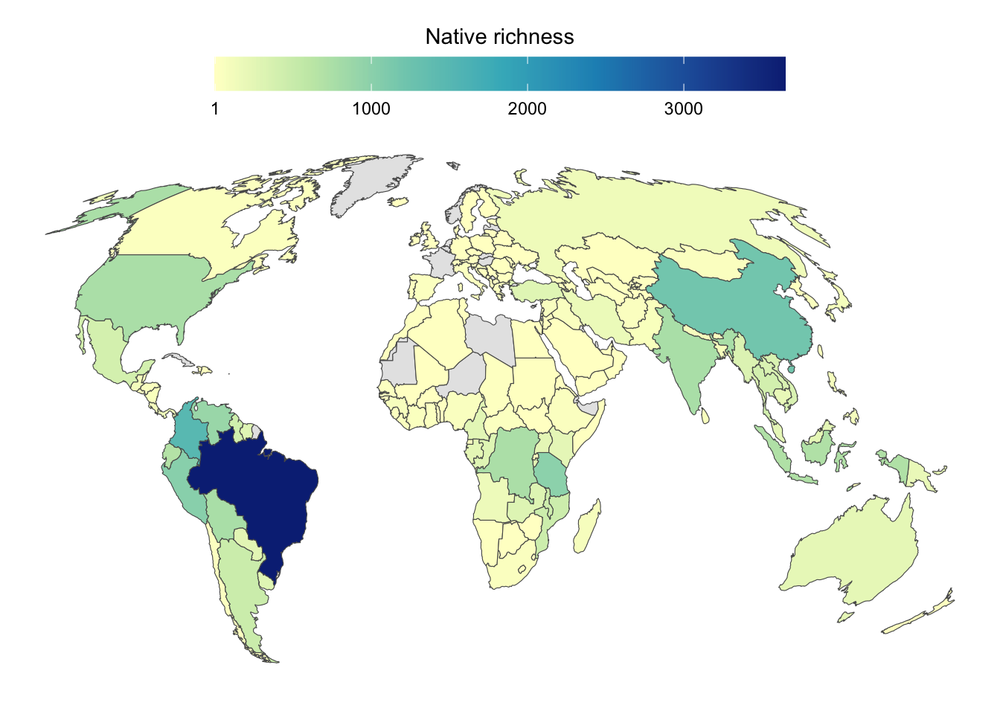
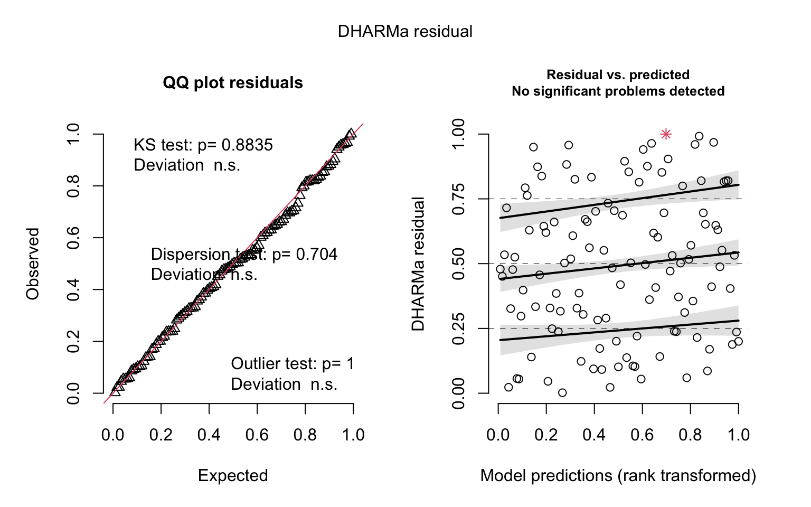
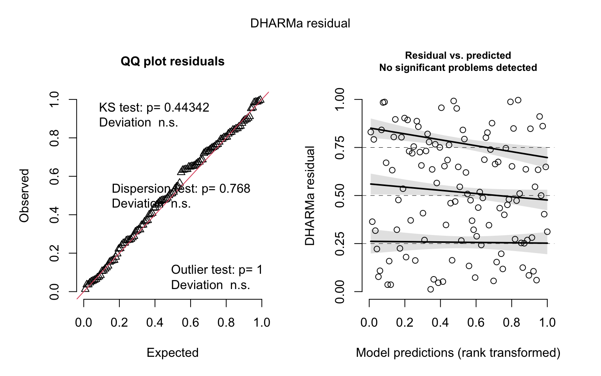
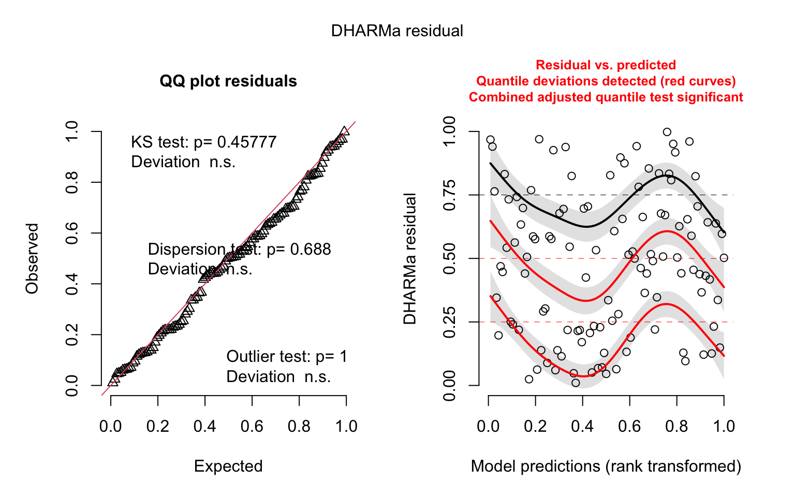

library(readr) # read csv objects
library(dplyr) # manipulate tables
library(tidyr) # data tidying
library(ggplot2) # plot figures
library(scales) # change axis values
library(countrycode) # download country informationSupplementary material - Figures and Tables
0010_Supplementary_analysis.qmd
In this document we provide the code to reproduce the Figures and Tables presented in supplementary material of the manuscript “The macroecology of knowledge: Spatio-temporal patterns of name-bearing types in biodiversity science”
Native species richness
Native richness with Catalog of Fishes
We calculate the native species richness for each country from data in the Catalog of Fishes. We used this source to avoid taxonomic mismatches between species names.
# Data from 01_C_data_preparation.qmd
df_country_native <- readr::read_csv(file = here::here("data","processed", "df_country_native.csv"))countries <-
rnaturalearth::ne_countries(scale = "medium",
returnclass = "sf") |>
dplyr::filter(region_wb != "Antarctica")|>
rmapshaper::ms_filter_islands(min_area = 20000000000) |>
rmapshaper::ms_simplify(keep = 0.95)
sf_countries <-
sf::st_as_sf(countries) |>
dplyr::filter(admin != "Antarctica") |>
dplyr::select(iso_a3)
df_country_native_sf <-
sf_countries |>
dplyr::full_join(df_country_native,
by = c(iso_a3 = "country_distribution"))Comparing richness from the Catalog of Fishes and Fishbase
Here we compared the richness obtained from the Catalog of Fishes and the Fishbase.
df_country_native_fishbase <- readr::read_csv(file = here::here("data","processed", "fishbase_species_country.csv"))
df_country_native_fishbase2 <-
df_country_native_fishbase |>
dplyr::rename(iso3c.fishbase = iso3c)
df_richness_all <-
df_country_native |>
dplyr::left_join(df_country_native_fishbase2, by = c(country_distribution = "iso3c.fishbase")) |>
tidyr::drop_na()
cor(df_richness_all$native.richness, df_richness_all$n)[1] 0.898011Figure S1 - Native richness
Native richness was extracted from the Catalog of Fishes
df_country_native_sf |>
ggplot()+
geom_sf(aes(fill = native.richness))+
scale_fill_distiller(palette = "YlGnBu",
direction = 1,
na.value = "grey90",
breaks = c(1, 1000, 2000,3000, 3854))+
labs(
fill = "Native richness"
)+
guides(fill = guide_colorbar(barwidth = 20))+
theme_void()+
theme(
legend.position = "top",
legend.title.position = "top",
legend.title = element_text(hjust = 0.5),
plot.background = element_rect(fill = "white",
color = NA)
)+
coord_sf(
crs = "+proj=moll +x_50=0 +y_0=0 +lat_0=0 +lon_0=0"
)
ggsave(here::here("output", "figures",
"Supp-material", "FigS1_native_richness.png"),
width = 7, height = 5, dpi = 600)All time Domestic Contribution (DC) and Domestic Retention (DR)
Here we provided all time values of DR and DC for each region. We used the same data from Figure 2 of the main text, but pulling together all the data
# Data from 01_C_data_preparation.qmd
flow_region_prop <- readr::read_csv(file = here::here("data", "processed", "flow_region_prop.csv"))Figure S2 - Scatterplot of all-time
flow_region_prop |>
ggplot(aes(x = prop_DC, y = prop_DR, fill = region_type))+
geom_hline(yintercept = 0.5, linetype = "dashed")+
geom_vline(xintercept = 0.5, linetype = "dashed")+
geom_point(
shape = 21,
size = 2.5
)+
scale_fill_manual(
values = c(
"Europe & Central Asia" = "#E64B35FF",
"East Asia & Pacific" = "#4DBBD5FF",
"North America" = "#3C5488FF",
"South Asia" = "#B09C85FF",
"Latin America & Caribbean" = "#00A087FF",
"Sub-Saharan Africa" = "#F39B7FFF",
"Middle East & North Africa" = "#8491B4FF"
)
)+
scale_x_continuous(
labels = scales::label_percent(),
expand = expansion(mult = c(0.05, 0))
)+
scale_y_continuous(
labels = scales::label_percent(),
expand = expansion(mult = c(0.05, 0))
)+
labs(
x = "Domestic Contribution (DC)",
y = "Domestic Retention (DR)"
)+
theme_classic()+
theme(
strip.background = element_rect(fill = NA, color = NA),
strip.text = element_text(face = "bold"),
legend.position = "none",
plot.background = element_blank(),
panel.spacing = unit(5, "pt"),
panel.spacing.x = unit(15, "pt"),
plot.margin = margin(5,15,5,5,"pt"),
axis.line = element_line(lineend = "round"),
axis.text = element_text(color = "black"),
axis.ticks = element_line(color = "black")
)+
coord_cartesian(xlim = c(0,1),
ylim = c(0,1),
clip = "off")# saving image
ggsave(filename = here::here("output", "figures", "Supp-material", "FigS2_scatterplot.png"),
width = 3.5, height = 3)Calculating turnover metrics with full native dataset
Reading packages
# data
library(readr) # reading CSV files
library(here) # constructing file paths
library(dplyr) # data manipulation
library(tidyr) # data tidying
library(phyloregion) # handling phylogenetic data and transformationsImporting and processing data
Importing and processing native composition and NBT composition data
# From 01_C_data_preparation.qmd
spp_native_distribution <- readr::read_csv(here::here("data", "raw", "spp_native_distribution.csv"))
# From 01_C_data_preparation.qmd
spp_type_distribution <- readr::read_csv(here::here("data", "raw", "spp_type_distribution.csv")) Checking the specimens with data in both tables (native distribution and types). We transformed the long format species occurrence data frame to dense format. During this procedure we removed 1204 species that do not have information on native distribution (or we couldn’t get this information from CAS)
df_native_grid <-
spp_native_distribution |>
dplyr::select(grids = country_distribution,
species = species) |>
tidyr::drop_na(grids)
df_type_grid <-
spp_type_distribution |>
dplyr::select(grids = country_museum,
species = species) |>
tidyr::drop_na(grids) |>
dplyr::mutate(grids = paste(grids, "type", sep = "_"))
# joining data frames
df_all_grid <- rbind(df_native_grid, df_type_grid) # joining both matrices -
#native and types composition
#### Just descriptive quantities
country_native <- unique(df_native_grid$grids)
country_type <- gsub(pattern = "_type",
replacement = "",
unique(df_type_grid$grids))
country_type_zero <- setdiff(country_native, country_type) # countries with no type specimen
# transforming into a sparse matrix to speed up calculations
sparse_all <- df_all_grid |>
phyloregion::long2sparse(grids = "grids", species = "species") |>
phyloregion::sparse2dense()
# Transforming in presence absence matrix
sparse_all_pa <- ifelse(sparse_all >= 1, 1, 0)
# Binding countries with no types - adding zeroes
country_type_zero_names <- paste(country_type_zero, "_type", sep = "") # this will be used to bind together matrix with types and add the countries with no type
matrix_type_zero <- matrix(0,
nrow = length(country_type_zero_names),
ncol = ncol(sparse_all_pa),
dimnames = list(country_type_zero_names,
colnames(sparse_all_pa)))
sparse_all_pa2 <- rbind(sparse_all_pa, matrix_type_zero)Calculating directional turnover based on native and primary type comparison
Here we calculated the turnover in two directions. One is the turnover of native composition, in other words, the underrepresentation of native fish species in museums and natural collections within the country. Values closer to one indicate that the country present a huge underepresentation of its native fish fauna in primary types located within the country.
The other metric is primary type turnover. Values approaching one indicate that there is an overepresentation of primary types maintained in the country when compared to the native fish fauna of that country.
source(here::here("R", "functions", "function_beta_types_success_fail.R"))
names_countries <- unique(df_native_grid$grids) # country names
df_all_beta <- beta_types(presab = sparse_all_pa2,
names.countries = names_countries) # calculating metrics of directional turnover
readr::write_csv(df_all_beta, here::here("data", "processed", "df_all_beta.csv"))Plotting native and NBT turnover for each country
In this section we present the cartogram of world map with values of native and NBT turnover using the full dataset of native species (Figure S4)
Loading packages
#data
library(dplyr)
library(tidyr)
#plot
library(ggplot2)
library(patchwork)
library(cowplot)
#map
library(rnaturalearth)
library(rmapshaper)
library(sf)
library(biscale)Data
# Data from 02_D_beta-countries.qmd
df_all_beta <- readr::read_csv(here::here("data", "processed", "df_all_beta.csv"))Joining metric information with geographical data
countries <- rnaturalearth::ne_countries(returnclass = "sf")
sf_countries <-
sf::st_as_sf(countries) |>
dplyr::filter(admin != "Antarctica") |>
sf::st_transform(crs = "+proj=moll +x_0=0 +y_0=0 +lat_0=0 +lon_0=0") |>
dplyr::select(iso_a3_eh)
df_all_beta_sf <-
sf_countries |>
dplyr::full_join(df_all_beta, by = c(iso_a3_eh = "countries"))First processing spatial data to convert NA values into 0
df_all_beta_sf2 <-
df_all_beta_sf |>
sf::st_as_sf() |>
rmapshaper::ms_filter_islands(min_area = 12391399903) |>
dplyr::mutate(
type.beta = ifelse(is.na(type.beta),
0,
type.beta),
native.beta = ifelse(is.na(native.beta),
0,
native.beta))Create palettes
palette_blue <- colorRampPalette(c("#d3d3d3", "#accaca", "#81c1c1", "#52b6b6"))
palette_pink <- colorRampPalette(c("#d3d3d3", "#c5acc2", "#bb84b1", "#ac5a9c"))Plotting maps
map_native_beta <-
ggplot() +
geom_sf(data = df_all_beta_sf2,
aes(geometry = geometry,
fill = native.beta),
color = "white",
size = 0.1, na.rm = T) +
scale_fill_gradientn(
colors = palette_pink(10),
na.value = "#d3d3d3",
limits = c(0,1)
)+
guides(fill = guide_colorbar(
barheight = unit(0.1, units = "in"),
barwidth = unit(4, units = "in"),
ticks.colour = "grey20",
title.position="top",
title.hjust = 0.5
)) +
labs(
fill = "Native"
)+
theme_classic()+
theme(
legend.position = "bottom",
legend.margin = margin(-10,0,0,0,"pt"),
axis.text = element_blank(),
axis.ticks = element_blank(),
axis.line = element_blank()
)
map_type_beta <-
ggplot() +
geom_sf(data = df_all_beta_sf2,
aes(geometry = geometry,
fill = type.beta),
color = "white",
size = 0.1, na.rm = T) +
scale_fill_gradientn(
colors = palette_blue(10),
na.value = "#d3d3d3",
limits = c(0,1)
)+
guides(fill = guide_colorbar(
barheight = unit(0.1, units = "in"),
barwidth = unit(4, units = "in"),
ticks.colour = "grey20",
title.position="top",
title.hjust = 0.5
)) +
labs(
fill = "Types"
)+
theme_classic()+
theme(
legend.position = "bottom",
legend.margin = margin(-10,0,0,0,"pt"),
axis.text = element_blank(),
axis.ticks = element_blank(),
axis.line = element_blank()
) Plotting the two quantities (native and types turnover) in a bivariate map
sf_bivar_types <-
bi_class(df_all_beta_sf2,
x = type.beta,
y = native.beta,
style = "equal",
dim = 4)
bivar_map_types <-
ggplot() +
geom_sf(data = sf_bivar_types,
aes(geometry = geometry,
fill = bi_class),
color = "white",
size = 0.1,
show.legend = FALSE) +
bi_scale_fill(pal = "DkBlue2",
dim = 4) +
theme_classic()+
theme(
legend.position = "bottom",
legend.title = element_blank(),
axis.text = element_blank(),
axis.ticks = element_blank(),
axis.line = element_blank(),
panel.background = element_rect(fill = NA),
plot.background = element_rect(fill = NA)
)
legend <-
bi_legend(pal = "DkBlue2",
dim = 4,
xlab = "NBT",
ylab = "Native",
size = )
bivar_map_type_final <-
ggdraw() +
draw_plot(legend, 0.0, 0.15, 0.25, 0.25) +
draw_plot(bivar_map_types, 0, 0, 1, 1)Joining all the maps
map_turnover_all <-
map_native_beta+map_type_beta+bivar_map_type_final+
patchwork::plot_layout(
design =
"AB
CC"
)+
patchwork::plot_annotation(tag_levels = "a")&
theme(
plot.tag = element_text(face = "bold", hjust = 0, vjust = 1),
plot.tag.position = c(0, 1),
)
map_turnover_allggsave(here::here("output", "figures", "Supp-material", "FigS3_turnover_metrics.png"),
map_turnover_all, dpi=600, width = 10, height = 9)Comparison between full dataset and endemic dataset
We performed correlations between Native and NBT turnover calculated using the endemic dataset and the full dataset of native species
df_endemic_beta <- readr::read_csv(here::here("data", "processed", "df_endemic_beta.csv"))
df_endemic_beta2 <-
df_endemic_beta |>
tidyr::drop_na(type.beta)
df_all_beta_sf2 <-
df_all_beta_sf |>
tidyr::drop_na(type.beta)
df_cor <-
df_endemic_beta2 |>
dplyr::left_join(df_all_beta_sf2, by = c(countries = "iso_a3_eh"))
cor(df_cor$type.beta.x, df_cor$type.beta.y)[1] 0.8185594cor(df_cor$native.beta.x, df_cor$native.beta.y)[1] 0.893118Model results
Here we report tables containing full results of the generalized linear models presented in the main text . Also we report residuals diagnostic plots using DHARMa package
library(sjPlot) # creating summary tables of model results
library(glmmTMB) # read model output objects
library(DHARMa) # diagnostic graphics of models
library(here) # constructing file pathsModel data
Reading model results
# Data from 03_C_data_preparation.qmd
df_country_complete6 <- readr::read_csv(here::here("data", "processed", "df_country_complete6.csv"))
# Data from 04_D_model_NBTs.qmd
mod_counting_NBT <- readRDS(here::here("output",
"models",
"model_res_counting.rds")) # NBT total countings
mod_DC <- readRDS(here::here("output",
"models",
"model_res_dc.rds"))
mod_DR <- readRDS(here::here("output",
"models",
"model_res_dr.rds"))
mod_turnover_native <- readRDS(here::here("output",
"models",
"model_res_turnover_native.rds"))
mod_turnover_nbt <- readRDS(here::here("output",
"models",
"model_res_turnover_nbt.rds"))Tables with estimated parameters
Producing tables with model parameters. These tables corresponds to the Tables S1 to S5 in the Supplementary material
# Table with model parameters for total number of NBT
sjPlot::tab_model(mod_counting_NBT,
transform = NULL,
pred.labels = c("Intercept",
"Native richness",
"Gbif records per area",
"Years since independence",
"GDP",
"Number of museums",
"Dispersion parameter"),
dv.labels = "Total Name Bearing Types",
string.pred = "Coefficients",
string.est = "Estimates",
string.p = "P-value")| Total Name Bearing Types | ||||
| Coefficients | Estimates | CI | P-value | |
| Count Model | ||||
| Intercept | 3.64 | 3.20 – 4.09 | <0.001 | |
| Native richness | 0.67 | 0.07 – 1.28 | 0.030 | |
| Gbif records per area | 0.36 | -0.00 – 0.73 | 0.052 | |
| Years since independence | -0.03 | -0.41 – 0.35 | 0.879 | |
| GDP | 0.84 | 0.37 – 1.31 | <0.001 | |
| Number of museums | 0.62 | 0.13 – 1.10 | 0.013 | |
| Dispersion parameter | 0.46 | 0.33 – 0.65 | ||
| Zero-Inflated Model | ||||
| (Intercept) | -19.93 | -36.70 – -3.16 | 0.020 | |
| native.richness.pad | 1.98 | -1.08 – 5.04 | 0.205 | |
| records.per.area.pad | -0.04 | -1.13 – 1.05 | 0.941 | |
| years.independence.pad | 1.01 | -0.37 – 2.38 | 0.151 | |
| gdp.pad | -0.56 | -2.59 – 1.46 | 0.586 | |
| n.museums.pad | -52.35 | -95.39 – -9.31 | 0.017 | |
| Observations | 116 | |||
| R2 / R2 adjusted | 1.000 / 1.000 | |||
# Table with parameter for Domestic contribution as the response variable
sjPlot::tab_model(mod_DC,
transform = NULL,
pred.labels = c("Intercept",
"Native richness",
"Gbif records per area",
"Years since independence",
"GDP",
"Number of museums"),
dv.labels = "Domestic Contribution",
string.pred = "Coefficients",
string.est = "Estimates",
string.p = "P-value")| Domestic Contribution | |||
| Coefficients | Estimates | CI | P-value |
| Intercept | 1.39 | 0.94 – 1.85 | <0.001 |
| Native richness | 0.05 | -0.30 – 0.40 | 0.772 |
| Gbif records per area | -0.41 | -0.67 – -0.15 | 0.002 |
| Years since independence | 0.15 | -0.16 – 0.46 | 0.335 |
| GDP | -0.71 | -1.11 – -0.30 | 0.001 |
| Number of museums | -0.07 | -0.41 – 0.26 | 0.666 |
| Observations | 116 | ||
# Table with parameters for model with Domestic retention as response variable
sjPlot::tab_model(mod_DR,
transform = NULL,
pred.labels = c("Intercept",
"Native richness",
"Gbif records per area",
"Years since independence",
"GDP",
"Number of museums"),
dv.labels = "Domestic Retention",
string.pred = "Coefficients",
string.est = "Estimates",
string.p = "P-value")| Domestic Retention | ||||
| Coefficients | Estimates | CI | P-value | |
| Count Model | ||||
| (Intercept) | -1.02 | -1.34 – -0.70 | <0.001 | |
| native.richness.pad | 0.08 | -0.19 – 0.35 | 0.554 | |
| records.per.area.pad | 0.06 | -0.15 – 0.28 | 0.576 | |
| years.independence.pad | 0.02 | -0.20 – 0.25 | 0.844 | |
| gdp.pad | 0.43 | 0.16 – 0.70 | 0.002 | |
| n.museums.pad | 0.30 | 0.04 – 0.57 | 0.024 | |
| (Intercept) | 4.40 | 2.91 – 6.65 | ||
| Zero-Inflated Model | ||||
| (Intercept) | -7.14 | -14.16 – -0.12 | 0.046 | |
| native.richness.pad | 0.03 | -1.78 – 1.85 | 0.971 | |
| records.per.area.pad | -0.86 | -3.08 – 1.36 | 0.448 | |
| years.independence.pad | 0.23 | -0.77 – 1.22 | 0.656 | |
| gdp.pad | -1.37 | -3.29 – 0.55 | 0.163 | |
| n.museums.pad | -19.17 | -36.83 – -1.50 | 0.033 | |
| Observations | 116 | |||
# Table with parameter from model with native turnover as response variable
sjPlot::tab_model(mod_turnover_native,
transform = NULL,
pred.labels = c("Intercept",
"Native richness",
"Gbif records per area",
"Years since independence",
"GDP",
"Number of museums"),
dv.labels = "Native turnover",
string.pred = "Coefficients",
string.est = "Estimates",
string.p = "P-value")| Native turnover | |||
| Coefficients | Estimates | CI | P-value |
| Intercept | 1.54 | 1.22 – 1.85 | <0.001 |
| Native richness | -0.10 | -0.46 – 0.26 | 0.585 |
| Gbif records per area | -0.22 | -0.52 – 0.08 | 0.151 |
| Years since independence | -0.19 | -0.49 – 0.11 | 0.212 |
| GDP | -0.83 | -1.16 – -0.49 | <0.001 |
| Number of museums | -0.62 | -0.99 – -0.26 | 0.001 |
| Observations | 116 | ||
# Table with parameters from model with nbt turnover as response variable
sjPlot::tab_model(mod_turnover_nbt,
transform = NULL,
pred.labels = c("Intercept",
"Native richness",
"Gbif records per area",
"Years since independence",
"GDP",
"Number of museums"),
dv.labels = "NBT turnover",
string.pred = "Coefficients",
string.est = "Estimates",
string.p = "P-value")| NBT turnover | |||
| Coefficients | Estimates | CI | P-value |
| Intercept | -0.83 | -1.39 – -0.27 | 0.004 |
| Native richness | -0.04 | -0.44 – 0.35 | 0.831 |
| Gbif records per area | 0.28 | 0.01 – 0.55 | 0.040 |
| Years since independence | -0.29 | -0.66 – 0.08 | 0.127 |
| GDP | 0.77 | 0.33 – 1.22 | 0.001 |
| Number of museums | -0.19 | -0.56 – 0.18 | 0.317 |
| Observations | 116 | ||
Diagnostic graphics
QQ-plots and residuals x predicted plots using DHARMa package. These plots are used to compose the Figure S4 in the Supplementary material
# total number of NBT
DHARMa::simulateResiduals(fittedModel = mod_counting_NBT, plot = T)
Object of Class DHARMa with simulated residuals based on 250 simulations with refit = FALSE . See ?DHARMa::simulateResiduals for help.
Scaled residual values: 0.7153866 0.001931219 0.696 0.2490446 0.648 0.992 0.1028773 0.5024718 0.3282699 0.8253997 0.4188254 0.3612344 0.8827414 0.1228934 0.6018339 0.236 0.5249315 0.4109765 0.4040863 0.4968128 ...# Domestic Contribution and Domestic Retention
DHARMa::simulateResiduals(fittedModel = mod_DC, plot = TRUE) # DC
Object of Class DHARMa with simulated residuals based on 250 simulations with refit = FALSE . See ?DHARMa::simulateResiduals for help.
Scaled residual values: 0.2810206 0.5451656 0.8206016 0.9920759 0.632 0.036 0.04606064 0.2683718 0.1179472 0.6518268 0.8012575 0.8871672 0.5651337 0.1619332 0.3115715 0.5 0.636466 0.1587027 0.8301241 0.3219646 ...DHARMa::simulateResiduals(fittedModel = mod_DR, plot = TRUE) # DRObject of Class DHARMa with simulated residuals based on 250 simulations with refit = FALSE . See ?DHARMa::simulateResiduals for help.
Scaled residual values: 0.03292798 0.4846432 0.752 0.7350029 0.6355823 0.8954591 0.01251584 0.7590609 0.3283859 0.9303126 0.5763356 0.8149691 0.1378731 0.637628 0.416421 0.42 0.4933403 0.09946908 0.720217 0.5149565 ...# native turnover
DHARMa::simulateResiduals(fittedModel = mod_turnover_native, plot = TRUE)
Object of Class DHARMa with simulated residuals based on 250 simulations with refit = FALSE . See ?DHARMa::simulateResiduals for help.
Scaled residual values: 0.3643169 0.9604177 0.218907 0.4996626 0.4468048 0.586672 0.2291625 0.1288934 0.6268271 0.09580275 0.2318073 0.1704958 0.5271945 0.4248068 0.2145687 0.764 0.431788 0.8319357 0.3455402 0.3028504 ...# NBT turnover
DHARMa::simulateResiduals(fittedModel = mod_turnover_nbt, plot = TRUE)Object of Class DHARMa with simulated residuals based on 250 simulations with refit = FALSE . See ?DHARMa::simulateResiduals for help.
Scaled residual values: 0.8617319 0.5820144 0.2277367 0.2187418 0.208 0.9406471 0.7678828 0.4724905 0.8400271 0.4985776 0.3119429 0.5414365 0.666443 0.4497502 0.1222786 0.6144549 0.05974446 0.8600977 0.084 0.5668753 ...